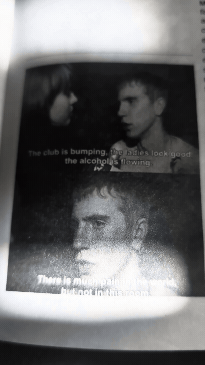

2026-06-14 — setting: Windows as apertures.
The late afternoon sun descends, casting light through the breeze tickled sheer curtains, with light dancing over the newspaper.

Eigenlicht journal entries, darkness-practice recordings, observations from the field. Dated, unedited.
The late afternoon sun descends, casting light through the breeze tickled sheer curtains, with light dancing over the newspaper.

The entry, verbatim from the journal.